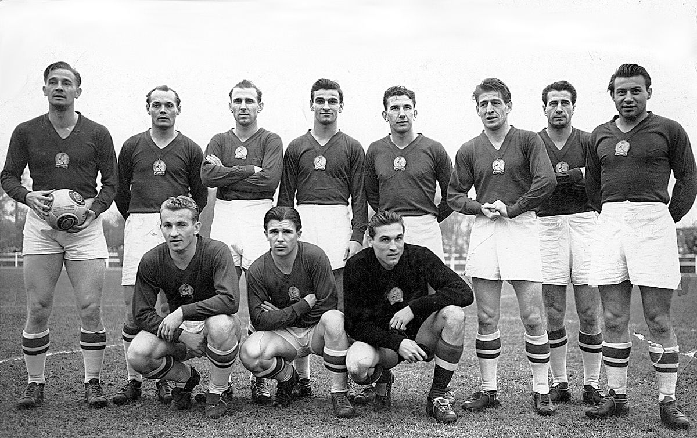

A Magyar Labdarúgó Válogatott története gazdag és jelentős, hiszen a magyar futball világszerte híres volt az 1950-es és 1960-as években, de azóta is számos siker és fontos mérkőzés fűződik a csapathoz.
Az 1950-es évek magyar válogatottja, amit gyakran "Aranycsapat" néven emlegetnek, az egyik legjobb csapat volt a futball történetében. A csapat a 1954-es világbajnokság döntőjéig menetelt, ahol 3-2-es vereséget szenvedtek el Nyugat-Németországtól. Az Aranycsapat tagjai közé tartozott például Puskás Ferenc, Kocsis Sándor, Hidegkuti Nándor és Bozsik József.
Puskás Ferenc minden idők egyik legnagyobb labdarúgója, aki a válogatott történetének egyik legismertebb alakja. 85 válogatott mérkőzésén 84 gólt szerzett, és kulcsszerepet játszott az 1950-es évek sikereiben. A Real Madridban is legendás karriert futott be. Az 1950-es és 1960-as években több mint 80 gólt szerzett a magyar válogatottban, és még ma is ő a csapat történetének legeredményesebb góllövője.
A jelenlegi magyar labdarúgó-válogatott egy dinamikus csapat, amely az elmúlt években igyekszik visszaépíteni a futball hagyományos erejét, és sikeres szereplésre törekszik nemzetközi szinten. A válogatott a legutóbbi időszakban jól szerepelt a 2024-es Európa-bajnoki selejtezőkben és más nemzetközi tornákon, így a csapat fejlődése és friss impulzusok jellemzik.